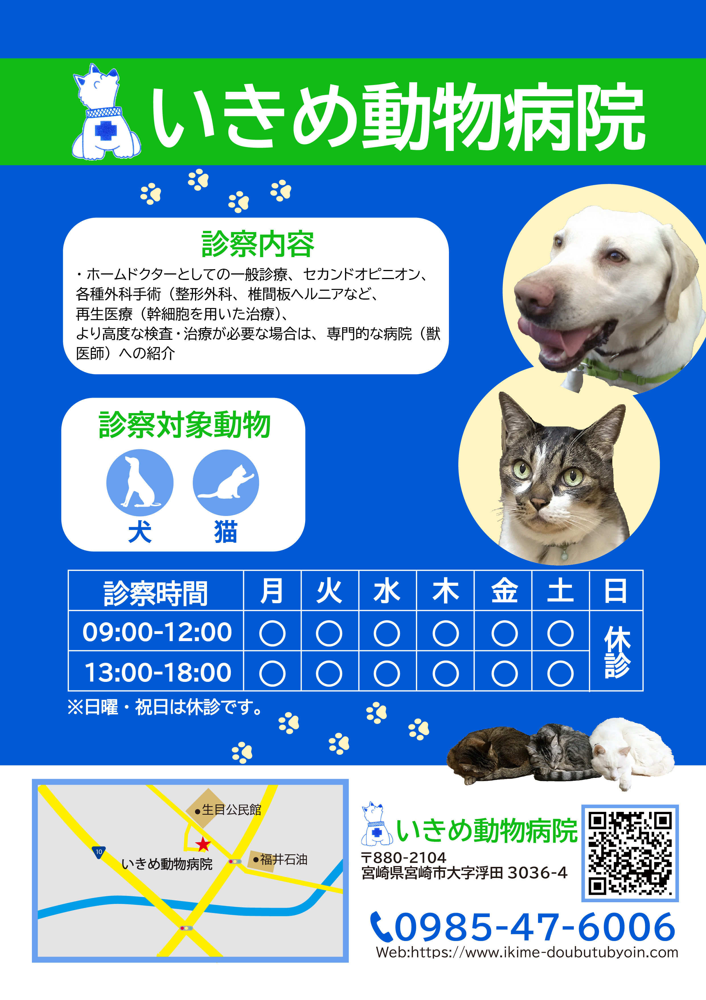
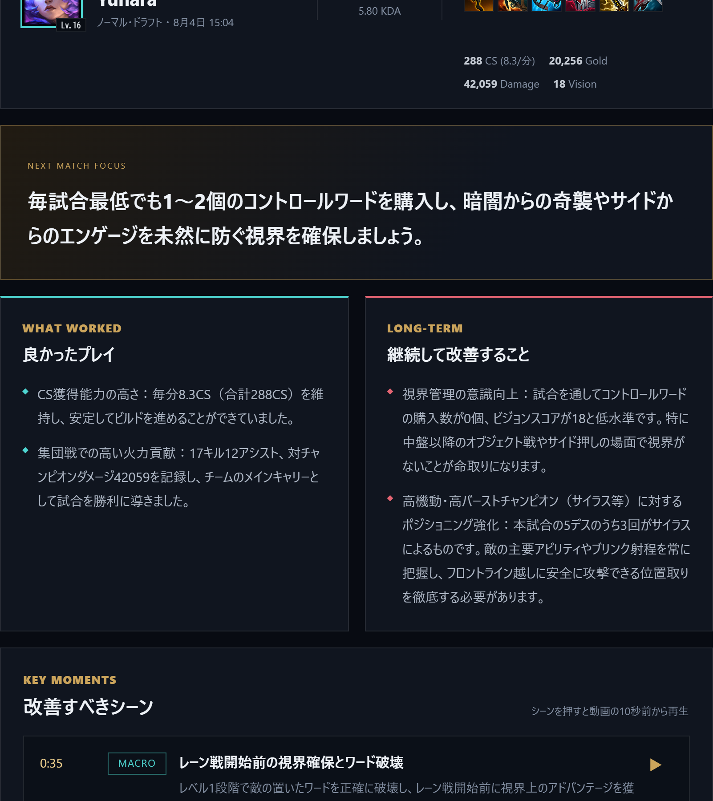

仮面ライダー
コンピュータグラフィックの授業で作成
数式を使った描画をしました。
コンピュータグラフィックの授業で作成
数式を使った描画をしました。

Webシステム設計演習の課題で作成しました。
ウェブシステムのフロントエンドとバックエンドの開発にAIを活用し、取り組みました。

グラフィックデザインの授業で作成
実在する動物病院のチラシを何枚も見てアイデアを吸収し、作成しました。

discordの会話ログを分析するアプリケーションです。
ログをHTMLとして出力できるアプリがあったので、HTMLファイルを入力して発言者や時間帯で分析できるようにしました。
CSV形式での出力もできます。
CGアニメーションの授業で作成
3Dモデリングとアニメーション制作を行いました。

ChatGPTを活用して、ゲームのAIコーチを作成しました。
ゲームのプレイ動画を分析し、改善点や戦略を提案するAIコーチを開発しました。
AIはAPIでGeminiを呼び出しています。